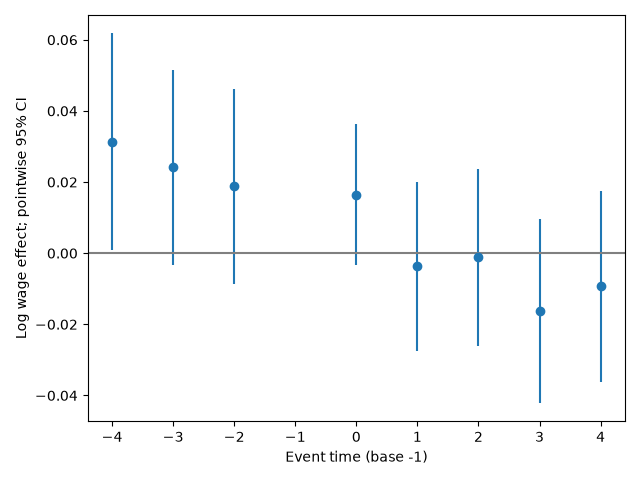

事件时间与基准期
以2014为事件零点，2013为省略基准期，估计2010—2012的lead与2014—2018的lag。共同批次演示与真实交错设计必须区分；后者的普通TWFE动态系数可能混入其他相对时期的效应。程序同时输出事件系数、城市聚类标准误、点态95%区间和事前联合Wald检验。
检验不等于验证假设
事前系数不显著不证明平行趋势。低检验力、宽区间和预检后选择都可能掩盖差异。事前系数显著也需区分提前反应、测量变化、样本构成与真实差异趋势。应同时给出图、区间、联合检验和实质上可接受的偏离幅度。
窗口与尾部
2010—2018是分析选择，不会消除2013全国战略带来的预期。公告当年为不完整暴露年；把首个完整年当处理年时，公告年应排除或单独建模，不能悄悄归为未处理基期。端点合并改变每个系数的含义，需标注哪些年份被合并。
如何解读图
共同基准导致各点相关，点态区间不能代替整条路径的同时置信带。事后k=0、1、2的差异可以来自动态效应，也可来自批次构成改变。交错事件图应说明每个相对期包含哪些批次，以及是否保持批次平衡。
核心公式
学习重点不是记住命令，而是能解释“事件研究与平行趋势诊断”中估计目标、识别假设与数据实现之间的关系。依次阅读基础讲解、推导与案例，再结合公共程序检查实际输出。
每个事件系数以什么为参照
在共同批次、相同样本与不加入其他时变协变量的饱和事件研究中，k期系数就是该期处理—对照差距减去基准期差距。省略−1期不是把其效果证明为零，而是规定所有系数的相对坐标。
若基准年已有提前反应，所有后续系数都被减去该年效应，动态路径会整体偏移。换一个基准期可能改变图形的表面水平，但不能解决提前反应本身。应先定义处理和预期窗口，再决定基准。
联合检验为何不同于逐点看星号
将全部事前系数组成向量b，联合检验利用它们的完整协方差矩阵。各期估计共享同一基准和对照，相关性通常很强。逐个检查置信区间是否跨零，与联合检验并不等价。
真实输出中联合p约0.243，不能翻译为“平行趋势通过”。应报告事前系数幅度与区间，判断是否能排除研究上重要的偏离。若置信区间很宽，无法拒绝通常是信息不足，而不是识别条件更可信。
如何写动态效应讨论
逐点区间描述单个时期的不确定性；同时置信带约束整条路径。看见某个滞后期显著而相邻期不显著，不代表两期效应显著不同，应直接检验两系数之差。
对于交错政策还要检查每个k的批次支持：远期效应往往只来自早批次。如果后期曲线变化仅是队列构成不同，就不能解释为同一批城市随时间的政策积累。第5课用支持表将这个问题显式化。
研究练习与解析
k=1显著而k=2不显著，是否意味着政策效应衰减？
展开解析
不能。应检验β1−β2，并使用两者协方差。显著性状态不同不等于两系数显著不同。
双软件实操
本课代码阅读
以下片段用于理解公共程序或读取已生成结果。涉及结果文件时，从analysis目录运行；调用twfe前须按run.py准备分析面板d，并导入相应函数。这里不把片段当成独立端到端程序。
展开本课Python片段
event = pd.read_csv('results/real/event.csv')
event['lower'] = event.att - 1.96 * event.se
event['upper'] = event.att + 1.96 * event.se
print(event[['k', 'att', 'lower', 'upper']])自测与参考答案
事前联合检验p=0.4可以证明什么？
参考答案
仅表示当前检验未拒绝零假设，应结合区间和检验力。
延伸阅读
方法原文：Callaway与Sant’Anna：多期DID；Sant’Anna与Zhao：DR-DID；Daw与Hatfield：匹配与均值回归；Goodman-Bacon：处理时点变化；Abadie与Imbens：匹配bootstrap。
已运行的真实数据输出
共同2014批次事件图：点态95%区间，不构成平行趋势证明

估计表CSV · 平衡诊断CSV · 组别—时间效应CSV · 验证记录及限制
方法原文：Sun与Abraham：异质效应下的事件研究。